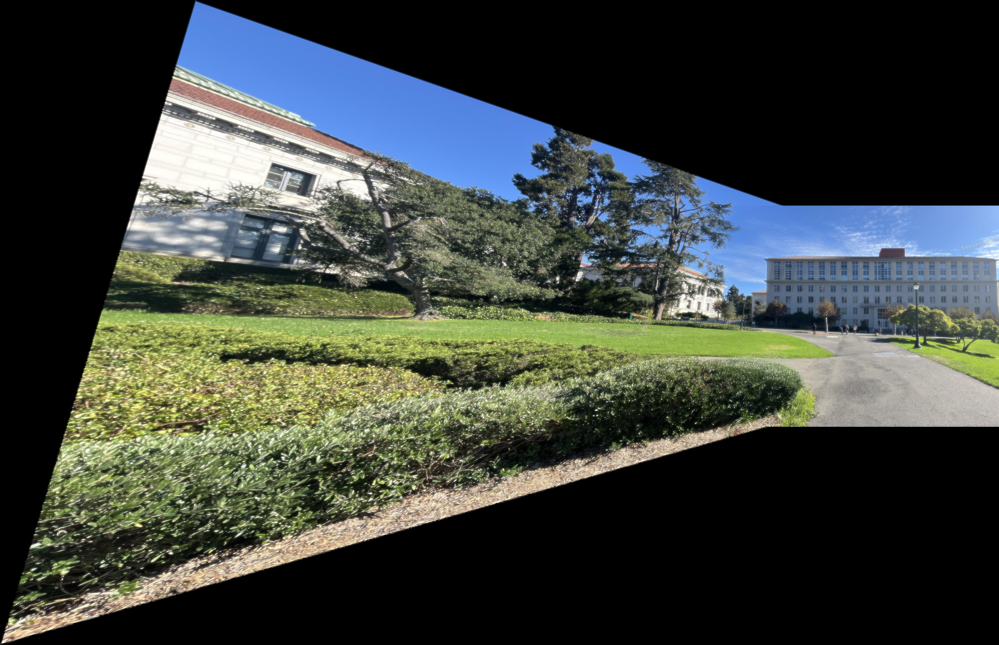

In this project, we use homography transformations on separate images from the same camera viewer to warp and stitch together images into a panorama/mosaic.
The images for this project were shot on an iPhone on campus. When gathering the images, the observer/camera needs to stay in the same position the entire time, while only rotating about the center axis (fixing the center of projection). This ensures that the transformations in the next step are projective. In this part, it is important that the images have significant overlapping features, in order to later define correspondences between pairs of images. Not having enough correspondences can lead to numerical instability. Below are images of Dwinelle Hall captured at two different angles.
Next, in order to define a transformation matrix from points in the original image to the warped image of the new perspective, we set up a system of equations in homogenous coordinates. The goal is to find the homography transformation matrix determined by the correspondence points. We stack the points in a tall matrix, which results in an overdetermined least squares problem solving for the parameters of the homography matrix, which can then be reshaped to 3x3. This matrix has 8 parameters or degrees of freedom, (lower left being a scaling factor), so at least 4 pairs of (x, y) points are required to make the system solveable. As this is based on human-defined correspondences, the overdetermined system is necessary to help combat noise from slightly off selections. Below are the defined correspondence points on the Dwinelle images.
With the homography matrix defined between the pairs of images, we can then warp one image to the points in the other. We first calculate the bounding box of the new image by multiplying the homography matrix with the corners of the original image, to avoid cutting off any values. We can then define the output polygon using sk.draw and the warped corners, then applying the inverse of the homography matrix to the polygon points to get the original points, whose values are assigned to the corresponding warped points, after interpolating to integer indices. We can vectorize the operations by taking advantage of matrix multiplication properties and the global nature of the transformation to multiply every point by the matrix at once.
An example of the above warping process can be seen through rectification, adjusting a surface which is not orthogonal to the camera so that it appears to be so. We do this by selecting the boundaries of the surface, like the four corners of a monitor or microwave, and warping them to perfectly rectangular points in a new canvas. Below is an example using a picture of a microwave, as well as a desk setup. Since the surfaces are not actually facing the camera, the images can become stretched at the boundaries to an extreme degree in order to preserve the illusion.

Now using the Dwinelle images, we first warp one image to the correspondences defined in the other. After warping the left image, we get the below results. An example of a distance transform is also shown, which is used as a blending mask in the next step.

We then allocate a final canvas size as big as necessary to contain the overlapped images. Then, in order to combine them, we align the images along the correspondence points and create a two-level Laplacian stack, blurring for the low frequencies and subtracting the blur from the original to get the high frequencies. We can then blend the low level frequencies using a distance transform mask as the weights on each image in a linear combination, where the value of the mask is the ratio of the distance to the nearest edge. The high frequencies are selected based on whichever distance transform mask value is larger between the two. The low and high frequencies are then merged back together, to get the final seamless result.

Below are two other results:
Note that tiny imperfections in the image blending likely results from human error, either in selecting the correspondence points (a tiny shift can result in a large warping effect) or accidentally moving the camera too much translationally. Especially when the subject is close to the camera, this translational error can have a large effect.
In this next section, we implemented feature detection and matching algorithms in order to automatically do the point selection and warping processes, to generate automated panoramas. In this section we will use the same three sets of images to compare and contrast results. Note that the images have been downscaled by 2x in order to help computational time.
Instead of manually selecting points of interest in the images, we can identify points with good characteristics for being recognizable between the two image, namely "corner" points where edges are distinguishable. We used the Harris detector which takes the peak local maximum over the Harris response matrix to identify corner points. The result can be seen below for a sigma and min distance of 7.
As seen in the previous image, the corner detection algorithm can generate too many dense points, depending on the parameters used. In order to filter our points for the most useful ones, we can use Adaptive Non-Maximal Suppression (ANMS) to select for the maximum radius around any point where it has a stronger strength than the neighboring points, and in each section of neighboring points, the largest corner strengths are kept until having reached the desired points count. The below image shows the top 250 points selected using ANMS.
To further improve our point selections for the eventual homography calculation, we can do a little looking ahead: by randomly selecting 4 points from each image and computing a homography, we can then warp points to compare their warped values to their actual values in the other image. By randomly sampling many times, we can hope to eventually find a set of points which do form a valid and optimal homography. These "inliers" are selected if they meet a chosen threshold, then the set with the largest number of inliers is kept at the end. Below is the RANSAC result on the same image.
The left results are the manual results (copied from above) and the right is the automatic stitching.

The coolest thing I have learned from this project is definitely the entire automatic selection process. At first it seems like the choice of correspondence points is more artistic than algorithmic, yet certain qualities like "corners" can be selected for, in a much less painstaking way than by hand.